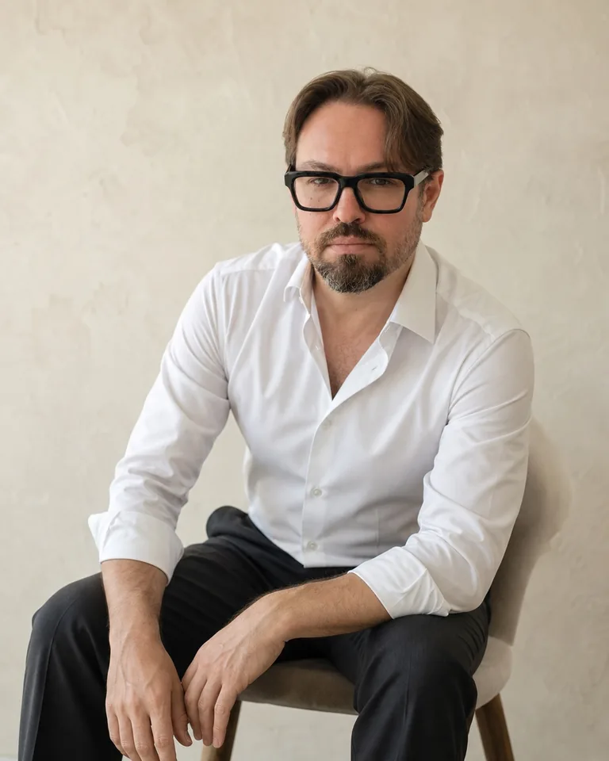

Идентичность
Когда бизнес становится частью собственного «я»
Что переживает собственник, когда под угрозой оказывается компания.
Читать статьюИндивидуальная психологическая работа с решениями в бизнесе
Помогаю увидеть, что мешает принять решение, разобраться в доступных вариантах и определить следующий шаг.
20 лет управленческой практики · магистр психологии НИУ ВШЭ
Начать можно с диагностической встречи: 30 минут, онлайн.
Рабочий запрос начинается с конкретного затруднения. Вместе смотрим на обстоятельства компании и на то, что мешает вам действовать.
Варианты уже понятны, но трудно принять риск, отказаться от прежнего плана или начать действовать.
Вы хотите передать ответственность команде, но снова проверяете и возвращаете задачи себе.
Разногласия о ролях, деньгах или будущем компании остаются без обсуждения.
Бизнес меняется. Нужно понять, какую роль вы готовы занять и от чего отказаться.
В работе исследуем возможные внутренние механизмы. Финансовый анализ и управленческие решения остаются частью реальности бизнеса.
С чего начатьДиагностическая встреча помогает уточнить запрос и понять, подходит ли вам мой формат работы.
Выбрать время встречиЧто происходит, какое решение требуется и где вы пока не можете продвинуться.
На что можно повлиять в работе и какое изменение имеет для вас смысл.
Обсуждаем формат, если он подходит вашей задаче. Решение о продолжении вы принимаете после встречи.
Если сначала хотите задать вопрос, можно написать мне лично в Telegram.

В работе соединяю психодинамический подход с управленческой и предпринимательской практикой. Это помогает обсуждать внутреннее напряжение в контексте решений, денег, команды и партнёрства.
Клиент откладывал отправку счетов и решение о закрытии нерентабельного направления. Результат: закрыт объём зависших платёжных документов; неработающее направление закрыто.
Период: одна неделя. Оценка связи с работой принадлежит клиенту.Смотреть кейсы«Он помогает мне увидеть то, что необходимо именно сейчас, чтобы я могла самостоятельно принять решение».Тамара, предприниматель.
Последовательная работа с конкретным запросом. Продолжительность зависит от вашей ситуации.
Полный цикл: 80 000 ₽
Оплата двумя блоками по 5 встреч.
Подходящий формат и продолжительность обсудим после диагностической встречи.
В Telegram пишу о том, как внутренние сценарии собственника входят в решения, деньги, команду и партнёрство. В боте собраны материалы и информация о работе.
Для знакомства с подходом в своём темпе.
Почему одного решения бывает недостаточно, чтобы изменить привычный способ действовать.
Что переживает собственник, когда под угрозой оказывается компания.
Читать статьюКак собственная реакция может влиять на цену и условия сделки.
Читать статьюКак отличить полезное сравнение от оценки своей жизни через чужие достижения.
Читать на ExecutiveВыберите время встречи или напишите мне лично. Можно начать с короткого описания того, что сейчас затрудняет решение.